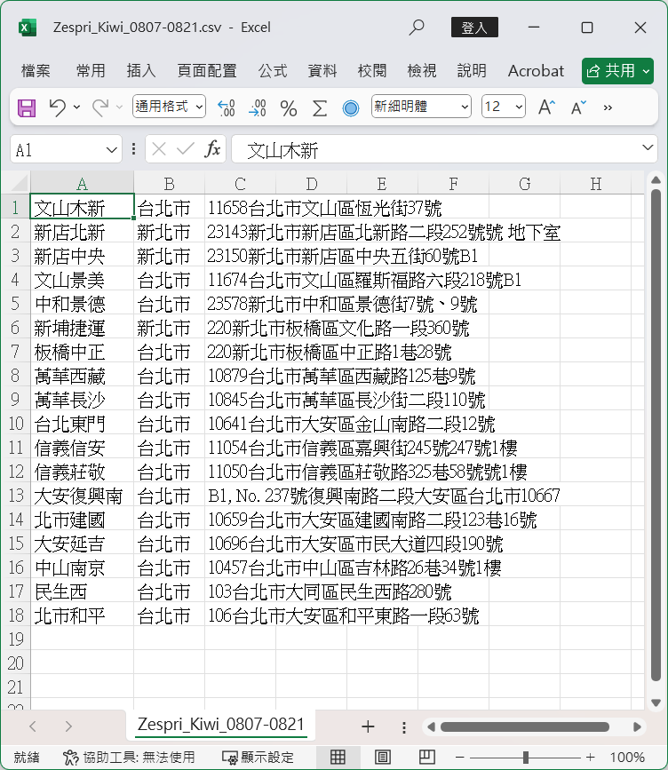

暗色
跑店路線最佳化
Google Maps API Key（僅前端使用，務必設定網域限制與 API 限制）
起點（例如：7-ELEVEN 統客門市）
終點（例如：231新北市新店區寶興路49號）
總店點最大筆數（Routes API 上限 23）
每段路徑最大中繼點數（Google Maps URL 上限 8）
交通工具
機車
汽車
自行車
步行
店名欄位索引（從 0 起算，預設為 0）
地址欄位索引（從 0 起算，預設為 2）
避開高速公路
避開收費路段
上傳 .csv 店點檔案（無標題列；預設第 0 欄=店名、第 2 欄=地址）
開始產生路線
若機車模式在你的所在區域尚無法支援，系統會自動使用汽車模式。
路徑輸出
說明 / 注意事項
本程式使用 Google Geocoding API 和 Routes API 。詳請請見
Cloud API | Google Cloud
API Key 需設定「HTTP 來源限制（網域）」與「API 限制（Routes API、Places API、Geocoding API）」。
Routes API 支援單次最多 25 個點（含起點與終點），故最多能安排 23 個中繼點。
Google Maps 手機版 APP 最多支援 8 個停靠點，路徑已自動分段。
機車模式在部分地區尚未全面開放，若呼叫失敗會自動回到汽車模式。
.csv 店點檔案檔作為輸入檔案，需要將 .xlvs 店面檔案先轉檔，並只保留需要的點；預設不存在標題列，故若欄位位置不同，需要調整索引。
範例
